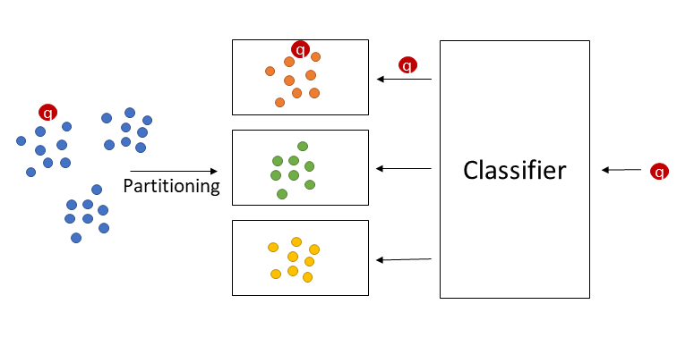
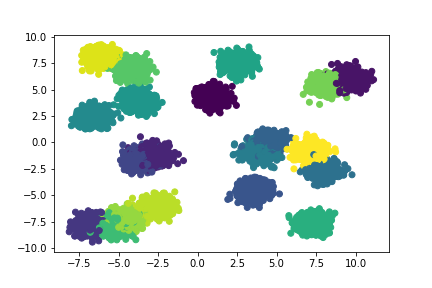
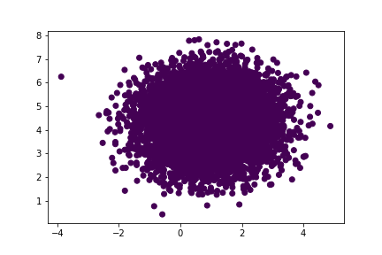
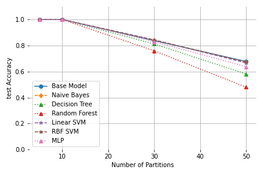
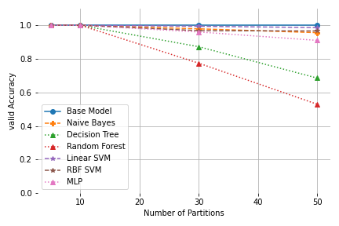
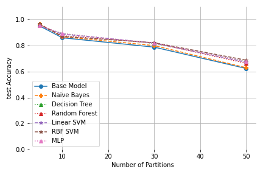
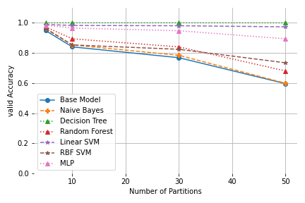

Towards a Learned Index Structure for Approximate Nearest Neighbor Search Query Processing
Maximilian Hünemörder, Peer Kröger and Matthias Renz
In our short paper, we outline the idea of applying the concept of a learned index structure to approximate nearest neighbor query processing. We discuss different data partitioning approaches and show how the task of identifying the disc pages of potential hits for a given query can be solved by a predictive machine learning model.
Method

As seen above a data set \(\mathcal{D}\) (blue dots) is supposed to be distributed over a set \(\mathcal{P}\) of \(p\) pages depending on the fixed capacity \(c\) of the datapages so that a Classifier can learn this partioning.
Points assigned to a cluster \(C_i (1\leq i \leq k)\) (orange, red and yellow dots) created by a partioning or clustering algorithm are mapped to page \(P_i\in\mathcal{P}\).
The classifier is then trained on the pseudolabels gained from the clustering algorithm and can then predict the page \(P\in\mathcal{P}\) where the query object \(q\) should be be placed on with learned function \(M : \mathcal{F} \rightarrow \mathcal{P}\).
The page \(P\) can be loaded into main memory and the nearest neighbors of \(q\) among all objects stored on \(P\) can be determined and returned as (approximate) result.
Experiments
In order to get a first impression of the proposed Learned Index Structure for Approximate Nearest Neighbor query processing, we used two synthetic data sets of 20-dimensional clustered and non-clustered data.
|  |
|---|
| Single Examples of the Synthetic datasets. Clustered and Uniform. |
Additionally, we used a low dimensional embedding of the popular MNIST data set generated by a fully connected Autoencoder (AE).
For the partitioning step, we used k-means and the leaf nodes of a kd-tree.
As predictive models, we used:
- A Base Model, where we assign each query object to its closest centroid of the corresponding partition
- Naive Bayes
- Decision Tree and Random Forest
- Support Vector Machine (SVM) with a linear and an rbf kernel
- A simple dense multi-layer perceptron (MLP).
For these preliminary experiments we did not perform hyper-parameter tuning but used reasonable default parameters. The AutoEncoder for the MNIST data set has only one single linear layer that maps the flattened images (784 dimensional array) to a latent space vector of 32 dimensions (using Leaky ReLU as activation).
For Evaluation we used:
- validation accuracy of the classifier with a single train-validation split \[ ACC_{Val} = \frac{TP + TN}{P + N} \]
- test (query) accuracy of the index with a set of perviously unseen query points \(Q\) originating from the same data process \[ ACC_{Test} = \frac{1}{|Q|} \cdot \sum_ {q \in Q} \begin{cases} 1, & \text{if } |NN_{D} - NN_{P_{M(q)}} | = 0 \ 0, & \text{otherwise} \end{cases} \]
Results
We analysed the relationship between the test accuracy and the number of samples and number of partitions, i.e., data pages over several runs and report the mean evalution measures. In all runs, we kept the capacity of pages fixed at 10.000 but changed the number of data points accordingly.
|   |
|---|
| Test and Validation Accuracy for k-means on the Clustered Datasets |
It is interesting to note that for most models the validation error remains better than the test accuracy, i.e. even though, the mapping is learned well, the true NNs for the query objects are approximated not quite as well. In these cases, the partitioning model seems to not optimally fit the real data distribution and therefore even with a perfect predictive model some queries can be placed in an unsuitable data page.
|   |
|---|
| Test and Validation Accuracy for the leaves of a kd-tree on the Clustered Datasets |
This is also reflected inthe fact that the kd-tree partitioning performs even worse in terms of test accuracy, since the clustered dataset was created in a way that favours k-means.
We can also observe that the Decision Tree classifier shows perfect validation accuracy for the kd-tree partitioning, while showing the worst performance for k-means. This suggests that choosing a fitting pair of prediction and partitioning algorithm is vital to at least result in a high validation accuracy. These observations are further confirmed by the non-clustered datasets (these results and our implementation can be found in our git repository). Additionally, this is further reflected in our results on MNIST in our paper, where the test accuracies for the kdtree paritioning are significantly worse than the ones for k-means. Generally further experiments and benchmarking are obviously necessary to obtain more significant results.
Conclusion
The results are generally promising for synthetic data such that we think it is worth putting more future focus on LIS for ANN query processing.
For example, exploring new ways for data partitioning including a more thorough evaluation of different existing partitioning schemes could be interesting. Also, understanding the relationship between data characteristics, properties of the partitioning, and the accuracy of different predictive models could be a promising research direction, that may lead to approaches that better integrate partitioning and learning. Additionally,exploring post-processing methods to increase accuracy, e.g. use additional information from training as well as from the partitioning like distance bounds would be helpful.Last not least, the application of LIS to other types of similarity queries is still an open research question.